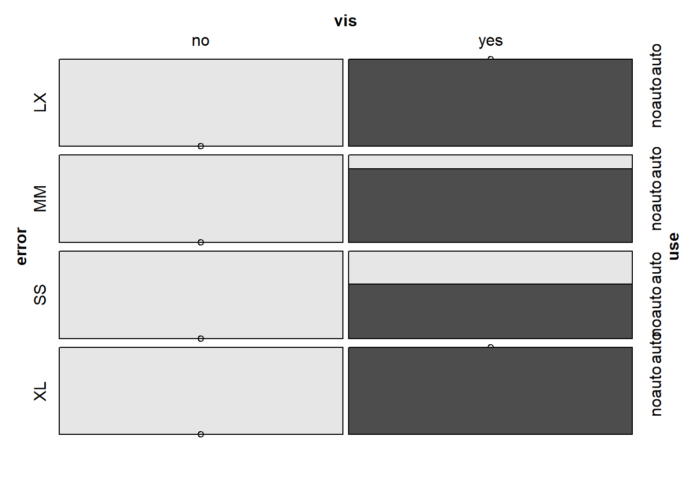

Chapter 6 PCA
6.1 Introduction
- 聚类分析，它可以将相似的观测 归成一类
- 主成分分析(PCA)，它可以对相关变量进行归类，从而降低数据维度，提高对数据的理解
6.1.1 Component
成分就是特征的规范化线性组合(James，2012)。在一个数据集中，第一主成分就 是能够最大程度解释数据中的方差的特征线性组合。第二主成分是另一种特征线性组合，它在方 向与第一主成分垂直这个限制条件下，最大程度解释数据中的方差。其后的每一个主成分(可以 构造与变量数相等数目的主成分)都遵循同样的规则。
- 线性组合：如果你试图在一个变量之间基本不相关的数据集上使用PCA，很可能会得到一个毫无意义的分析结果
- 变量的均值和方差是充分统计量。也就是说，数据应该服从正态分布，这样协方差矩阵即可充分 描述数据集。换言之，数据要满足多元正态分布。PCA对于非正态分布的数据具有相当强的鲁棒 性，甚至可以和二值变量一起使用，所以结果具有很好的解释性。
6.1.2 PCA算法
PCA顾名思义，就是找出数据里最主要的方面，用数据里最主要的方面来代替原始数据。具体的，假如我们的数据集是n维的，共有m个数据 \((x^{(1)},x^{(2)},...,x^{(m)})\) 。我们希望将这m个数据的维度从n维降到n’维，希望这m个n’维的数据集尽可能的代表原始数据集。我们知道数据从n维降到n’维肯定会有损失，但是我们希望损失尽可能的小。如何让这n’维的数据尽可能表示原来的数据
求样本 \(x^{(i)}\) 的n’维的主成分其实就是求样本集的协方差矩阵 \(X X^{T}\) 的前n’个特征值对应特征向量矩阵W，然后对于每个样本 \(x^{(i)}\),做如下变换 \(z^{(i)}=W^{T} x^{(i)},\) 即达到降维的PCA目的。
具体的算法流程。
- 输入：n维样本集 \(D=\left(x^{(1)}, x^{(2)}, \ldots, x^{(m)}\right),\) 要降维到的维数n’.
- 输出：降维后的样本集 \(D^{\prime}\)
- 对所有的样本进行中心化: \(x^{(i)}=x^{(i)}-\frac{1}{m} \sum_{j=1}^{m} x^{(j)}\)
- 计算样本的协方差矩阵 \(X X^{T}\)
- 对矩阵 \(X X^{T}\) 进行特征值分解
- 取出最大的n’个特征值对应的特征向量 \(\left(w_{1}, w_{2}, \ldots, w_{n^{\prime}}\right),\) 将所有的特征向量标准化后, 组成特征向量矩阵W。。
- 对样本集中的每一个样本 \(x^{(i)}\),转化为新的样本 \(z^{(i)}=W^{T} x^{(i)}\)
- 得到输出样本集 \(D^{\prime}=\left(z^{(1)}, z^{(2)}, \ldots, z^{(m)}\right)\)
6.1.3 主成分旋转
旋转方法有两种
- 正交旋转(rotate=“varimax”)
使得成分保持不相关（正交旋转） - 斜交旋转(rotate=“promax”)
使得成分相关
最流行的正交旋转是 方差极大旋转，它试图对载荷的列进行去噪， 使得每个成分只由一组有限的变量来解释（即载荷阵每列只有少数几个很大的载荷，其他的都是很小的载荷）
6.1.4 Kernelized PCA
PCA算法中，假设存在一个线性的超平面，可以让我们对数据进行投影。但是有些时候，数据不是线性的，不能直接进行PCA降维。
这里就需要用到和支持向量机一样的核函数的思想，先把数据集从n维映射到线性可分的高维N>n,然后再从N维降维到一个低维度n’, 这里的维度之间满足\(n'\lt n \lt N\)。
使用了核函数的主成分分析一般称之为核主成分分析(Kernelized PCA, 以下简称KPCA。假设高维空间的数据是由n维空间的数据通过映射\(\phi\)产生。则对于n维空间的特征分解：
\[ \sum\limits_{i=1}^{m}x^{(i)}x^{(i)T}W=\lambda W \]
映射为：
\[ \sum\limits_{i=1}^{m}\phi(x^{(i)})\phi(x^{(i)})^TW=\lambda W \]
通过在高维空间进行协方差矩阵的特征值分解，然后用和PCA一样的方法进行降维。
6.2 Application
6.2.2 Modeling
对于模型构建过程，我们按照以下几个步骤进行:
抽取主成分并决定保留的数量;
- 通过psych包抽取主成分要使用principal()函数，语法中要包括数据和是否要进行主成分旋转
- pca <- principal(train.scale, rotate=“none”)
- 碎石图可以帮助你评估能解释大部分数据方差的主成分, 需要在碎石图中找出使变化率降低的那个点， 也就是我们常说的统计图中的“肘点”或弯曲点。
- 肘点表示在这个点上新增加一个主成分时，对方差的解释增加得并不太多。换句话说，这个点就是曲线由陡变平的转折点
对留下的主成分进行旋转;
- 旋转背后的意义是使变量在某个主成分上的载荷最大化
- 可以减少(或消灭)主成分之间的相关性，有助于对主成分的解释。
- 进行正交旋转的方法称为“方差最大法”。还有其他非正交旋转方法，这种方法允许主成分(因子)之间存在相关性
对旋转后的解决方案进行解释; 生成各个因子的得分; 使用得分作为输入变量进行回归分析
使用测试数据评价模型效果。

## Principal Components Analysis
## Call: principal(r = train.scale, nfactors = 5, rotate = "varimax")
## Standardized loadings (pattern matrix) based upon correlation matrix
## RC1 RC2 RC5 RC3 RC4 h2 u2 com
## Goals_For -0.21 0.82 0.21 0.05 -0.11 0.78 0.22 1.3
## Goals_Against 0.88 -0.02 -0.05 0.21 0.00 0.82 0.18 1.1
## Shots_For -0.22 0.43 0.76 -0.02 -0.10 0.81 0.19 1.8
## Shots_Against 0.73 -0.02 -0.20 -0.29 0.20 0.70 0.30 1.7
## PP_perc -0.73 0.46 -0.04 -0.15 0.04 0.77 0.23 1.8
## PK_perc -0.73 -0.21 0.22 -0.03 0.10 0.64 0.36 1.4
## CF60_pp -0.20 0.12 0.71 0.24 0.29 0.69 0.31 1.9
## CA60_sh 0.35 0.66 -0.25 -0.48 -0.03 0.85 0.15 2.8
## OZFOperc_pp -0.02 -0.18 0.70 -0.01 0.11 0.53 0.47 1.2
## Give -0.02 0.58 0.17 0.52 0.10 0.65 0.35 2.2
## Take 0.16 0.02 0.01 0.90 -0.05 0.83 0.17 1.1
## hits -0.02 -0.01 0.27 -0.06 0.87 0.83 0.17 1.2
## blks 0.19 0.63 -0.18 0.14 0.47 0.70 0.30 2.4
##
## RC1 RC2 RC5 RC3 RC4
## SS loadings 2.69 2.33 1.89 1.55 1.16
## Proportion Var 0.21 0.18 0.15 0.12 0.09
## Cumulative Var 0.21 0.39 0.53 0.65 0.74
## Proportion Explained 0.28 0.24 0.20 0.16 0.12
## Cumulative Proportion 0.28 0.52 0.72 0.88 1.00
##
## Mean item complexity = 1.7
## Test of the hypothesis that 5 components are sufficient.
##
## The root mean square of the residuals (RMSR) is 0.08
## with the empirical chi square 28.59 with prob < 0.19
##
## Fit based upon off diagonal values = 0.91## RC1 RC2 RC5 RC3 RC4
## 1 -2.21526408 0.002821488 0.3161588 -0.1572320 1.5278033
## 2 0.88147630 -0.569239044 -1.2361419 -0.2703150 -0.0113224
## 3 0.10321189 0.481754024 1.8135052 -0.1606672 0.7346531
## 4 -0.06630166 -0.630676083 -0.2121434 -1.3086231 0.1541255
## 5 1.49662977 1.156905747 -0.3222194 0.9647145 -0.6564827
## 6 -0.48902169 -2.119952370 1.0456190 2.7375097 -1.3735777##
## Call:
## lm(formula = ppg ~ ., data = pca.scores)
##
## Residuals:
## Min 1Q Median 3Q Max
## -0.163274 -0.048189 0.003718 0.038723 0.165905
##
## Coefficients:
## Estimate Std. Error t value Pr(>|t|)
## (Intercept) 1.111333 0.015752 70.551 < 2e-16 ***
## RC1 -0.112201 0.016022 -7.003 3.06e-07 ***
## RC2 0.070991 0.016022 4.431 0.000177 ***
## RC5 0.022945 0.016022 1.432 0.164996
## RC3 -0.017782 0.016022 -1.110 0.278044
## RC4 -0.005314 0.016022 -0.332 0.743003
## ---
## Signif. codes: 0 '***' 0.001 '**' 0.01 '*' 0.05 '.' 0.1 ' ' 1
##
## Residual standard error: 0.08628 on 24 degrees of freedom
## Multiple R-squared: 0.7502, Adjusted R-squared: 0.6981
## F-statistic: 14.41 on 5 and 24 DF, p-value: 1.446e-06##
## Call:
## lm(formula = ppg ~ RC1 + RC2, data = pca.scores)
##
## Residuals:
## Min 1Q Median 3Q Max
## -0.18914 -0.04430 0.01438 0.05645 0.16469
##
## Coefficients:
## Estimate Std. Error t value Pr(>|t|)
## (Intercept) 1.11133 0.01587 70.043 < 2e-16 ***
## RC1 -0.11220 0.01614 -6.953 1.8e-07 ***
## RC2 0.07099 0.01614 4.399 0.000153 ***
## ---
## Signif. codes: 0 '***' 0.001 '**' 0.01 '*' 0.05 '.' 0.1 ' ' 1
##
## Residual standard error: 0.0869 on 27 degrees of freedom
## Multiple R-squared: 0.7149, Adjusted R-squared: 0.6937
## F-statistic: 33.85 on 2 and 27 DF, p-value: 4.397e-08## [1] 0.08244449## [1] 0.08244449
## [1] 0.1011561